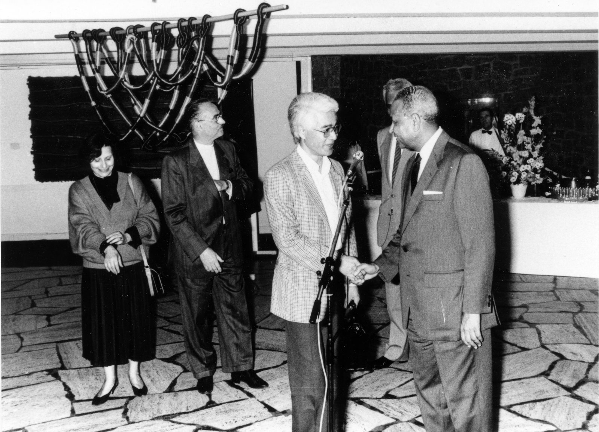

受賞歴 遺作展
Prix et expositions posthumes
Prix
1973 Grand Prix du Festival d'art de Cannes, France
1984 Prix NAC de l'exposition des artistes japonais, Paris
1986 Grand prix international de tapisserie, 60e anniversaire de l'UNESCO, Paris
1993 Grand Prix de NAC, Chartres, France
1984 Prix NAC de l'exposition des artistes japonais, Paris
1986 Grand prix international de tapisserie, 60e anniversaire de l'UNESCO, Paris
1993 Grand Prix de NAC, Chartres, France
Expositions posthumes
1998 « 5 créateurs liciers d'Ile de France », Chapelle des templiers, sanctuaire Ville Dieu, Élancourt, France — Exposition « Jomon Now », galerie Dan, Maruzen Nagoya, Japon — Biennale internationale de la tapisserie et de la sculpture contemporaine, Cité Internationale des Arts, Paris — 1re Biennale de NAC, Maison de la culture du Japon, Paris
1999 Exposition ARELIS « Material Connexion Textile », Banque fédérale de Boston
2000 2e Biennale de NAC, Cité Internationale des Arts, Paris
2004 Salon « Art Époque », musée de Ibaragi, Japon
1999 Exposition ARELIS « Material Connexion Textile », Banque fédérale de Boston
2000 2e Biennale de NAC, Cité Internationale des Arts, Paris
2004 Salon « Art Époque », musée de Ibaragi, Japon
